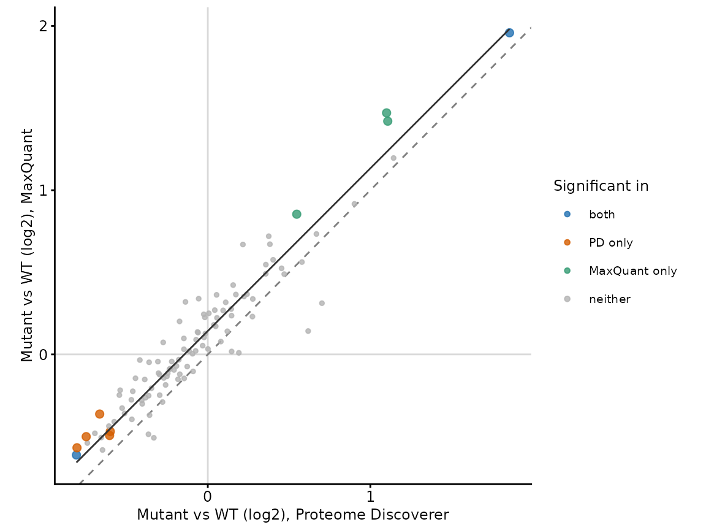

Comparing processing pipelines
Tom Smith
2026-09-11
Source:vignettes/processing_pipeline_comparison.Rmd
processing_pipeline_comparison.RmdThe same raw files can be processed with Proteome Discoverer, MaxQuant, Spectronaut or DIA-NN, and the four will not give you the same answer. Each searches spectra with a different engine — Proteome Discoverer is not itself a search engine, but a platform that can be configured with several, and the data here were searched with CHIMERYS — then assigns peptides to proteins by different rules, and extracts and normalises intensities differently. Each of those differences propagates to the protein-level matrix, and from there to the fold changes and the list of significant proteins.
This vignette runs one experiment through two of those pipelines — Proteome Discoverer and MaxQuant — and asks how much of the result survives the change. It is worth knowing the answer for two reasons. If you have output from more than one pipeline, you need to decide what to make of the differences. And if you have output from only one, the size of the differences here is a reasonable guide to how much of your protein list is a property of the biology and how much is a property of the software.
What this comparison can and cannot show. Both example datasets are subset to a shared set of proteins, so that the vignette stays small. That makes it a fair comparison of quantification and testing on proteins both pipelines had the chance to see, and an unfair comparison of identification depth, since neither was given the chance to contribute proteins the other’s subset lacks. Depth is a real difference between pipelines and it is not what is measured below.
The data
lfq_dda_pd_PeptideGroups.txt and
lfq_dda_mq_peptides.txt.gz are files available from the
biomasslmb package holding, respectively, the Proteome
Discoverer and MaxQuant peptide-level output for the same six
acquisitions: a whole-proteome LFQ-DDA comparison between a wild
type human cell line and a point mutant of the same line, three
replicates each.
The Proteome Discoverer side has already been processed in the LFQ-DDA QC and
summarisation vignette, and the result ships as lfq_qf.
So only the MaxQuant side needs building here, and it is built with the
same choices at every step, so that the comparison isolates the pipeline
rather than the analyst.
mq_inf <- system.file("extdata", "lfq_dda_mq_peptides.txt.gz",
package = "biomasslmb")Processing the MaxQuant output
MaxQuant’s peptides.txt is the counterpart of PD’s
peptide groups export. The column names differ throughout —
Leading.razor.protein for PD’s
Master.Protein.Accessions, Reverse and
Potential.contaminant for PD’s Contaminant,
Intensity.<experiment> for
Abundance.<file ID> — but it holds the same kind of
thing.
The intensity columns are named for MaxQuant’s ‘experiment’ labels, so as with the PD export the first job is to attach the design.
infdf <- read.delim(mq_inf)
intensity_cols_ix <- grep('^Intensity\\.', colnames(infdf))
colnames(infdf)[intensity_cols_ix]
#> [1] "Intensity.A" "Intensity.B" "Intensity.C" "Intensity.D" "Intensity.F"
#> [6] "Intensity.G"
exp_design <- data.frame(
Condition = rep(c('WT', 'Mutant'), each = 3),
Replicate = rep(1:3, times = 2))
exp_design$Sample <- paste(exp_design$Condition, exp_design$Replicate, sep = '_')
exp_design$quantCols <- exp_design$Sample
colnames(infdf)[intensity_cols_ix] <- exp_design$Sample
knitr::kable(exp_design)| Condition | Replicate | Sample | quantCols |
|---|---|---|---|
| WT | 1 | WT_1 | WT_1 |
| WT | 2 | WT_2 | WT_2 |
| WT | 3 | WT_3 | WT_3 |
| Mutant | 1 | Mutant_1 | Mutant_1 |
| Mutant | 2 | Mutant_2 | Mutant_2 |
| Mutant | 3 | Mutant_3 | Mutant_3 |
MaxQuant writes an intensity of exactly zero where it has no
measurement. Mass spectrometry cannot assert that a peptide was absent,
only that it was not detected, so those have to become NA
before anything else happens — an important difference from the PD
export, which leaves the cell empty.
mq_qf <- readQFeatures(assayData = infdf,
quantCols = intensity_cols_ix,
colData = exp_design,
name = 'peptides_raw')
#> Checking arguments.
#> Loading data as a 'SummarizedExperiment' object.
#> Formatting sample annotations (colData).
#> Formatting data as a 'QFeatures' object.
mq_qf <- sync_coldata(mq_qf, 'peptides_raw')
mq_qf[['peptides_raw']] <- zeroIsNA(mq_qf[['peptides_raw']])The rest is the pipeline from the LFQ-DDA vignette, with
filter_features_mq_dda() in place of
filter_features_pd_dda() and
Leading.razor.protein in place of
Master.Protein.Accessions. MaxQuant searches against its
own contaminants FASTA, so the accessions come from
get_maxquant_cont_accessions() rather than from the
universal contaminants database PD was searched against. MaxQuant
assigns every peptide a single leading razor protein, so there is no
unique_master filter to apply; its counterpart is
proteotypic, left off here to match the PD pipeline.
contaminant_accessions <- get_maxquant_cont_accessions()
mq_qf[['peptides_filtered']] <- filter_features_mq_dda(
mq_qf[['peptides_raw']],
contaminant_proteins = contaminant_accessions,
filter_contaminant = TRUE,
filter_associated_contaminant = TRUE,
remove_no_quant = TRUE)
mq_qf <- sync_coldata(mq_qf, 'peptides_filtered')
mq_qf[['peptides_filtered']] <- logTransform(
mq_qf[['peptides_filtered']], base = 2)
mq_qf[['peptides_filtered_norm']] <- normalize(
mq_qf[['peptides_filtered']], method = 'diff.median')
mq_qf[['peptides_filtered_missing']] <- filterNA(
mq_qf[['peptides_filtered_norm']], 4/6)
min_peps <- 2
mq_qf[['peptides_for_summarisation']] <- filter_features_per_protein(
mq_qf[['peptides_filtered_missing']], min_features = min_peps,
master_protein_col = 'Leading.razor.protein')
set.seed(42)
mq_qf <- aggregateFeatures(mq_qf,
i = 'peptides_for_summarisation',
fcol = 'Leading.razor.protein',
name = 'protein',
fun = MsCoreUtils::robustSummary,
maxit = 10000)
mq_qf <- sync_coldata(mq_qf, 'protein')
protein_retain_mask <- get_protein_no_quant_mask(
mq_qf[['peptides_for_summarisation']], min_features = min_peps,
master_protein_col = 'Leading.razor.protein')
mq_qf[['protein']] <- mask_protein_level_quant(
mq_qf[['protein']], protein_retain_mask)What each pipeline produced
summarise_pipeline <- function(qf) {
data.frame(
peptides_used = nrow(qf[['peptides_for_summarisation']]),
proteins = nrow(qf[['protein']]),
median_peptides_per_protein = median(rowData(qf[['protein']])$.n),
percent_missing = round(100 * nNA(qf[['protein']])$nNA$pNA, 1))
}
rbind(
`Proteome Discoverer` = summarise_pipeline(lfq_qf),
MaxQuant = summarise_pipeline(mq_qf))
#> peptides_used proteins median_peptides_per_protein
#> Proteome Discoverer 2064 230 4
#> MaxQuant 1524 165 5
#> percent_missing
#> Proteome Discoverer 11.4
#> MaxQuant 17.4
pd_proteins <- rownames(lfq_qf[['protein']])
mq_proteins <- rownames(mq_qf[['protein']])
shared_proteins <- intersect(pd_proteins, mq_proteins)
c(PD_only = length(setdiff(pd_proteins, mq_proteins)),
shared = length(shared_proteins),
MaxQuant_only = length(setdiff(mq_proteins, pd_proteins)))
#> PD_only shared MaxQuant_only
#> 92 138 27Even with both inputs restricted to the same protein list, the two pipelines end up quantifying different sets of it. Proteins are lost at every stage — a peptide not identified, a peptide identified but assigned to a different protein, a peptide with too many missing values, a protein left with fewer than two peptides — and the losses are not the same on both sides.
That is also why MaxQuant carries more protein-level missingness here despite starting from the same runs: fewer peptides per protein means fewer chances for a protein to be seen in a given sample.
Do they identify the same peptides?
Restricting to the proteins both pipelines quantified, the peptide sets still only partly overlap.
pd_peptides <- rowData(lfq_qf[['peptides_for_summarisation']])
mq_peptides <- rowData(mq_qf[['peptides_for_summarisation']])
pd_seqs <- unique(toupper(
pd_peptides$Sequence[pd_peptides$Master.Protein.Accessions %in% shared_proteins]))
mq_seqs <- unique(toupper(
mq_peptides$Sequence[mq_peptides$Leading.razor.protein %in% shared_proteins]))
c(PD_only = length(setdiff(pd_seqs, mq_seqs)),
shared = length(intersect(pd_seqs, mq_seqs)),
MaxQuant_only = length(setdiff(mq_seqs, pd_seqs)))
#> PD_only shared MaxQuant_only
#> 492 1266 164So the two protein-level estimates for a shared protein are not two measurements of the same thing in the strict sense: they are summaries over overlapping but different sets of peptides. This is the mechanism behind everything that follows, and it is worth keeping in mind before attributing a disagreement to one pipeline being ‘wrong’.
Fold changes
Both protein matrices go through the same test: a two-group comparison, restricted to proteins with at least two quantified replicates in each condition (see data exploration and statistical testing for why that restriction is needed).
test_condition <- function(qf) {
condition <- factor(qf[['protein']]$Condition, levels = c('WT', 'Mutant'))
design <- model.matrix(~ condition)
quant <- assay(qf[['protein']])
n_quant <- sapply(levels(condition), function(g) {
rowSums(!is.na(quant[, condition == g, drop = FALSE]))
})
testable <- apply(n_quant, 1, min) >= 2
fit <- eBayes(lmFit(quant[testable, ], design))
topTable(fit, coef = 'conditionMutant', number = Inf, sort.by = 'none')
}
pd_res <- test_condition(lfq_qf)
mq_res <- test_condition(mq_qf)
data.frame(
pipeline = c('Proteome Discoverer', 'MaxQuant'),
tested = c(nrow(pd_res), nrow(mq_res)),
significant = c(sum(pd_res$adj.P.Val < 0.05), sum(mq_res$adj.P.Val < 0.05)))
#> pipeline tested significant
#> 1 Proteome Discoverer 191 12
#> 2 MaxQuant 126 7
comparison <- merge(pd_res, mq_res, by = 'row.names',
suffixes = c('.PD', '.MQ')) %>%
dplyr::rename(Protein = 'Row.names') %>%
mutate(called = case_when(
adj.P.Val.PD < 0.05 & adj.P.Val.MQ < 0.05 ~ 'both',
adj.P.Val.PD < 0.05 ~ 'PD only',
adj.P.Val.MQ < 0.05 ~ 'MaxQuant only',
TRUE ~ 'neither'))
nrow(comparison)
#> [1] 107
round(cor(comparison$logFC.PD, comparison$logFC.MQ), 3)
#> [1] 0.947The fold changes agree closely. That is the reassuring half of the result: whatever else differs, the two pipelines are measuring the same biological effect on the proteins they both quantify.
Fitting a line to two noisy measurements
The obvious thing to do with a scatter like this is to regress one axis on the other and read off the slope. Ordinary least squares is the wrong tool here, and the reason is visible in the answer it gives.
c(`MaxQuant ~ PD` = unname(coef(lm(logFC.MQ ~ logFC.PD, comparison))[2]),
`1 / (PD ~ MaxQuant)` = unname(1 / coef(lm(logFC.PD ~ logFC.MQ, comparison))[2]))
#> MaxQuant ~ PD 1 / (PD ~ MaxQuant)
#> 0.9388918 1.0465638Those two numbers describe the same line, and they disagree. Ordinary least squares minimises error in the response only, so it assumes the predictor is measured without error. Regressing MaxQuant on PD therefore treats the PD fold changes as exact and attributes all the scatter to MaxQuant, which biases the slope towards zero; swapping the axes biases it the other way. Neither assumption is true — both axes are estimates from noisy data, and neither is the predictor.
Total least squares minimises perpendicular distance instead,
treating both axes symmetrically. tls() implements it and
is designed to be passed to geom_smooth().
The TLS slope sits between the two OLS estimates, close to 1: on the proteins both pipelines quantify, they agree on the magnitude of the effect and not only its direction.
ggplot(comparison, aes(logFC.PD, logFC.MQ)) +
geom_hline(yintercept = 0, colour = 'grey85') +
geom_vline(xintercept = 0, colour = 'grey85') +
geom_abline(slope = 1, intercept = 0, linetype = 2, colour = 'grey50') +
geom_point(aes(colour = called, size = called != 'neither'), alpha = 0.8) +
geom_smooth(method = tls, formula = y ~ x, se = FALSE,
colour = 'grey20', linewidth = 0.5) +
scale_colour_manual(
values = c(get_cat_palette(3), 'grey70'),
breaks = c('both', 'PD only', 'MaxQuant only', 'neither'),
name = 'Significant in') +
scale_size_manual(values = c(1, 2), guide = 'none') +
theme_biomasslmb(base_size = 9) +
labs(x = 'Mutant vs WT (log2), Proteome Discoverer',
y = 'Mutant vs WT (log2), MaxQuant')
Protein fold changes from the two pipelines, with a total least squares fit (solid) against the identity line (dashed).
Significant proteins
Agreement on fold change does not carry over to agreement on significance.
table(comparison$called)
#>
#> both MaxQuant only neither PD only
#> 2 3 97 5
comparison %>%
filter(called %in% c('PD only', 'MaxQuant only')) %>%
select(Protein, called, logFC.PD, adj.P.Val.PD, logFC.MQ, adj.P.Val.MQ) %>%
mutate(across(where(is.numeric), ~ signif(.x, 2))) %>%
arrange(called)
#> Protein called logFC.PD adj.P.Val.PD logFC.MQ adj.P.Val.MQ
#> 1 P05141 MaxQuant only 1.10 0.140 1.50 0.046
#> 2 P42677 MaxQuant only 0.55 0.430 0.85 0.033
#> 3 P78527 MaxQuant only 1.10 0.110 1.40 0.043
#> 4 O43143 PD only -0.60 0.033 -0.47 0.063
#> 5 Q7RTV0 PD only -0.67 0.034 -0.36 0.270
#> 6 Q8IWX8 PD only -0.60 0.033 -0.49 0.070
#> 7 Q9UJV9 PD only -0.75 0.019 -0.50 0.052
#> 8 Q9Y383 PD only -0.80 0.034 -0.57 0.120Look at what these disagreements are made of. Every one of them has the same sign in both pipelines, and none is a case of one pipeline seeing an effect the other missed entirely: what moves is the adjusted p-value, over a range that straddles 0.05 while the fold change barely shifts. A protein summarised from more peptides, or from peptides with less missingness, gets a tighter estimate and clears the threshold; the same protein summarised from a handful of noisier peptides does not. The threshold is a step function applied to a continuous quantity, so proteins near it are decided by small differences in precision — which is exactly what changing pipeline perturbs.
Note also that the disagreement counted here is only over the 107 proteins both pipelines tested. Every protein one pipeline quantified and the other did not is a silent disagreement that never reaches this table.
What to do with this
- Fold changes are robust; significance calls are not. If a result matters, its evidence should be the effect size and its consistency across replicates, not which side of 0.05 the adjusted p-value fell on in one pipeline.
- Do not run both and keep whichever gives the answer you wanted. Two pipelines produce two sets of borderline calls, and picking between them after seeing the results is an unrecorded multiple-testing problem. Choose the pipeline before looking, on grounds that have nothing to do with the outcome — the acquisition type, what the search needs to support, what the rest of the project used.
- Running both as a check is legitimate, provided you say so. A protein significant in both pipelines is better supported than one significant in either alone. Reporting the intersection is defensible; reporting the union without saying two pipelines were tried is not.
-
When you do plot one pipeline against another, use
tls(). Both axes are noisy estimates and neither predicts the other, so ordinary least squares gives an answer that depends on which one you happened to put on the x-axis.
The same reasoning applies to the DIA pipelines. The LFQ-DIA precursor QC and summarisation vignette covers reading both DIA-NN and Spectronaut output, and a comparison between them would be built exactly as above: process both through the same steps, then compare the protein-level results.
Where to go next
- Peptides are not proteins measures the other half of the disagreement above. The two pipelines agree on every unshared peptide and on well under half of the shared ones, so some of what looks like a quantification difference here is an assignment difference.
- Comparing protein summarisation approaches isolates the summarisation step on its own, holding the search constant — useful for telling which part of a pipeline difference came from which stage.
- LFQ-DDA peptide QC and summarisation covers reading both Proteome Discoverer and MaxQuant output in full, if what you need is to run one of these pipelines rather than compare them.
-
?tlshas the arguments for the orthogonal regression fitted above, which is the line to use whenever both axes are noisy estimates and neither predicts the other.
Getting help
If your experiment does not fit what this article assumes, or a result looks wrong, please get in touch with Tom Smith (tsmith@mrclmb.ac.uk) rather than guessing — it is far easier to help while an analysis is in progress than to unpick a decision afterwards, and easier still before the samples are run. Getting started sets out which article applies to which experiment.
sessionInfo()
#> R version 4.5.3 (2026-03-11)
#> Platform: x86_64-pc-linux-gnu
#> Running under: Ubuntu 24.04.5 LTS
#>
#> Matrix products: default
#> BLAS: /usr/lib/x86_64-linux-gnu/openblas-pthread/libblas.so.3
#> LAPACK: /usr/lib/x86_64-linux-gnu/openblas-pthread/libopenblasp-r0.3.26.so; LAPACK version 3.12.0
#>
#> locale:
#> [1] LC_CTYPE=C.UTF-8 LC_NUMERIC=C LC_TIME=C.UTF-8
#> [4] LC_COLLATE=C.UTF-8 LC_MONETARY=C.UTF-8 LC_MESSAGES=C.UTF-8
#> [7] LC_PAPER=C.UTF-8 LC_NAME=C LC_ADDRESS=C
#> [10] LC_TELEPHONE=C LC_MEASUREMENT=C.UTF-8 LC_IDENTIFICATION=C
#>
#> time zone: UTC
#> tzcode source: system (glibc)
#>
#> attached base packages:
#> [1] stats4 stats graphics grDevices utils datasets methods
#> [8] base
#>
#> other attached packages:
#> [1] limma_3.66.0 dplyr_1.2.1
#> [3] tidyr_1.3.2 ggplot2_4.0.3
#> [5] biomasslmb_0.1.0 QFeatures_1.20.0
#> [7] MultiAssayExperiment_1.36.2 SummarizedExperiment_1.40.0
#> [9] Biobase_2.70.0 GenomicRanges_1.62.1
#> [11] Seqinfo_1.0.0 IRanges_2.44.0
#> [13] S4Vectors_0.48.1 BiocGenerics_0.56.0
#> [15] generics_0.1.4 MatrixGenerics_1.22.0
#> [17] matrixStats_1.5.0
#>
#> loaded via a namespace (and not attached):
#> [1] DBI_1.3.0 rlang_1.3.0 magrittr_2.0.5
#> [4] clue_0.3-68 otel_0.2.0 compiler_4.5.3
#> [7] RSQLite_3.53.3 mgcv_1.9-4 png_0.1-9
#> [10] systemfonts_1.3.2 vctrs_0.7.3 reshape2_1.4.5
#> [13] stringr_1.6.0 ProtGenerics_1.42.0 pkgconfig_2.0.3
#> [16] crayon_1.5.3 fastmap_1.2.0 backports_1.5.1
#> [19] XVector_0.50.0 labeling_0.4.3 rmarkdown_2.32
#> [22] visdat_0.6.0 ragg_1.5.2 purrr_1.2.2
#> [25] bit_4.6.0 xfun_0.60 cachem_1.1.0
#> [28] jsonlite_2.0.0 blob_1.3.0 DelayedArray_0.36.1
#> [31] cluster_2.1.8.2 R6_2.6.1 bslib_0.12.0
#> [34] stringi_1.8.9 RColorBrewer_1.1-3 genefilter_1.92.0
#> [37] jquerylib_0.1.4 Rcpp_1.1.2 knitr_1.52
#> [40] BiocBaseUtils_1.12.0 Matrix_1.7-4 splines_4.5.3
#> [43] igraph_2.3.3 tidyselect_1.2.1 abind_1.4-8
#> [46] yaml_2.3.12 lattice_0.22-9 tibble_3.3.1
#> [49] plyr_1.8.9 withr_3.0.3 KEGGREST_1.50.0
#> [52] S7_0.2.2 evaluate_1.0.5 uniprotREST_1.0.0
#> [55] desc_1.4.3 survival_3.8-6 Biostrings_2.78.0
#> [58] pillar_1.11.1 corrplot_0.95 checkmate_2.3.4
#> [61] scales_1.4.0 xtable_1.8-8 glue_1.8.1
#> [64] lazyeval_0.2.3 tools_4.5.3 robustbase_0.99-7
#> [67] annotate_1.88.0 fs_2.1.0 XML_3.99-0.24
#> [70] grid_4.5.3 MsCoreUtils_1.22.1 AnnotationDbi_1.72.0
#> [73] nlme_3.1-168 naniar_1.1.0 cli_3.6.6
#> [76] textshaping_1.0.5 S4Arrays_1.10.1 AnnotationFilter_1.34.0
#> [79] gtable_0.3.6 DEoptimR_1.2-1 sass_0.4.10
#> [82] digest_0.6.39 SparseArray_1.10.10 htmlwidgets_1.6.4
#> [85] farver_2.1.2 memoise_2.0.1 htmltools_0.5.9
#> [88] pkgdown_2.2.1 lifecycle_1.0.5 httr_1.4.9
#> [91] statmod_1.5.2 bit64_4.8.6 MASS_7.3-65